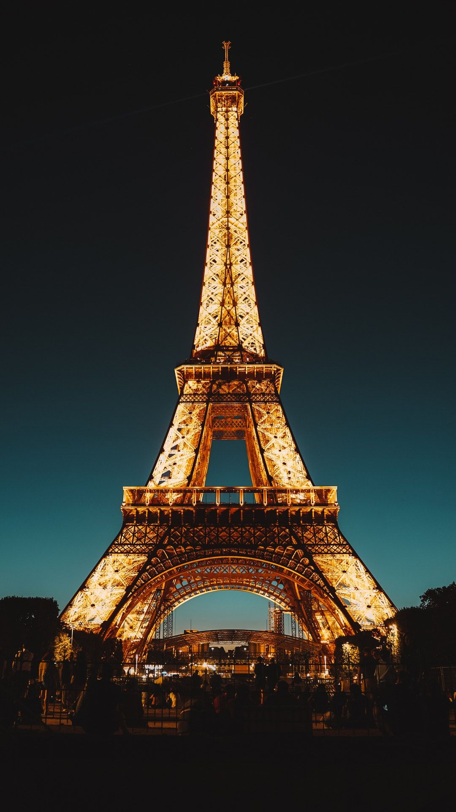
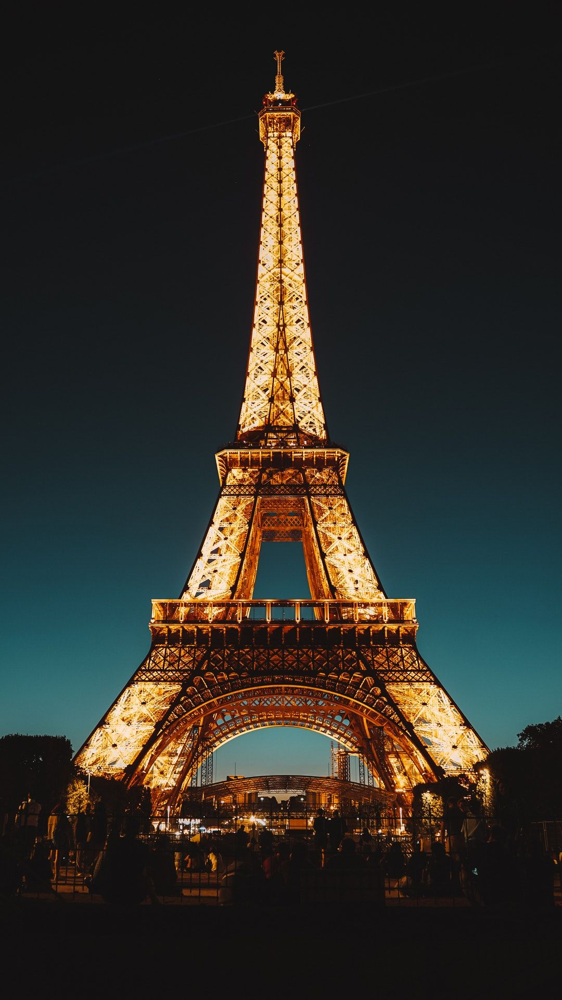

Eiffel Tour
Unique Art Of Metal By Gustave Eiffel
Initialized
The Eiffel Tower (/ˈaɪfəl/ ⓘ EYE-fəl; French: Tour Eiffel [tuʁ ɛfɛl] ⓘ) is a wrought-iron lattice tower on the Champ de Mars in Paris, France. It is named after the engineer Gustave Eiffel, whose company designed and built the tower from 1887 to 1889. Locally nicknamed "La dame de fer" (French for "Iron Lady"),it was constructed as the centerpiece of
.......
s
History
The design of the Eiffel Tower is attributed to Maurice Koechlin and Émile Nouguier, two senior engineers working for the Compagnie des Établissements Eiffel. It was envisioned after discussion about a suitable centerpiece for the proposed 1889 Exposition Universelle, a world's fair to celebrate the centennial of the French Revolution. In May 1884
.......
s
Artists' protest
The proposed tower had been a subject of controversy, drawing criticism from those who did not believe it was feasible and those who objected on artistic grounds. Prior to the Eiffel Tower's construction, no structure had ever been constructed to a height of 300 m, or even 200 m for that matter,[14] and many people believed it was impossible. These objections were an expression of a long-standing debate in France about the relationship between architecture and engineering.
Construction
Work on the foundations started on 28 January 1887.[23] Those for the east and south legs were straightforward, with each leg resting on four 2 m (6.6 ft) concrete slabs, one for each of the principal girders of each leg. The west and north legs, being closer to the river Seine, were more complicated: each slab needed two piles installed by using compressed-air caissons 15 m (49 ft) long and 6 m (20 ft) in diameter driven to a depth of 22 m (72 ft)[24] to support the concrete slabs
Inauguration and the 1889 exposition
The main structural work was completed at the end of March 1889 and, on 31 March, Eiffel celebrated by leading a group of government officials, accompanied by representatives of the press, to the top of the tower.[20] Because the lifts were not yet in operation, the ascent was made by foot, and took over an hour, with Eiffel stopping frequently to explain various features.


 
